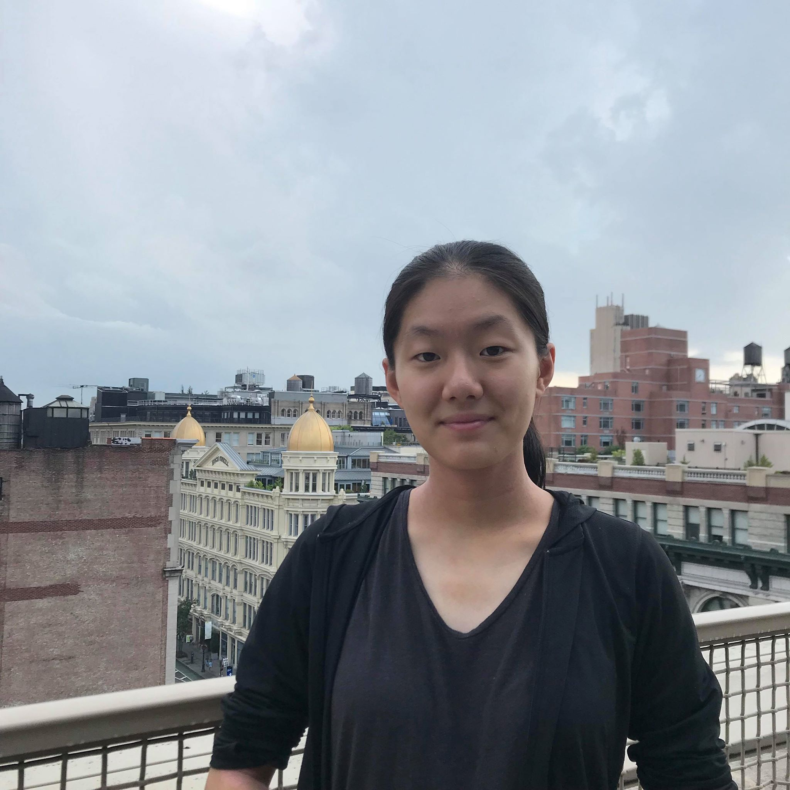

<section class="who-we-are-page">
    <div class="container">
      <div class="row" style="min-height:450px;">
        <div class="col-lg-10 mr-auto ml-auto">
          <div class="who-we-are-header">
            who we are
            <hr style="height: 3px; width: 25%; background-color: #3c3059">
            <hr style="height: 2px; width: 15%; background-color: #84b7b1">
          </div>
            <p>
                W.in Debate is a free mentoring service that provides mentees with the opportunity to refine their debating 
                skills in a space where they feel both comfortable and safe, while building long-lasting relationships with 
                positive role models. 
                <!-- <br>
                <br>
                Founded on the principle of women supporting women, our program seeks to create a support 
                system for younger women involved in Lincoln-Douglas Debate, a male-dominated activity. We believe that competitive 
                success shouldn’t come at the expense of a woman’s safety and wellbeing, and hope to foster an environment 
                where both are possible.  -->
            </p>
          </div>
        </div>
      <div class="row">
        <div class="col-lg-10 mr-auto ml-auto">
          <div class="who-we-are-header">
            organizers
            <hr style="height: 3px; width: 25%; background-color: #3c3059">
            <hr style="height: 2px; width: 15%; background-color: #84b7b1">
          </div>
          <div>
            <h5>Lindsey Perlman</h5>
            <p>photo</p>
            <p>
              Lindsey is a rising senior from New York. Her experiences with sexism in the debate activity motivated
              her to create W.in debate in the hopes that it would prevent the same discrimination from happening to younger 
              women. Lindsey is grateful to have had older female role models throughout her time in the activity to guide 
              and encourage her, and she hopes that W.in debate will provide other young women with a similar support system. 
              Lindsey is excited to play a role in creating an empowering space for women through the W.in debate platform!
            </p>

            <h5>Julia Wu</h5>
            <p>photo</p>
            <p>bio</p>

            <h5>Claire Liu</h5>
            
            <p>bio</p>

            <h5>Amy Pu</h5>
            <p>photo</p>
            <p>bio</p>
            </div>
        </div>
      </div>
    </div>
  </section>
  